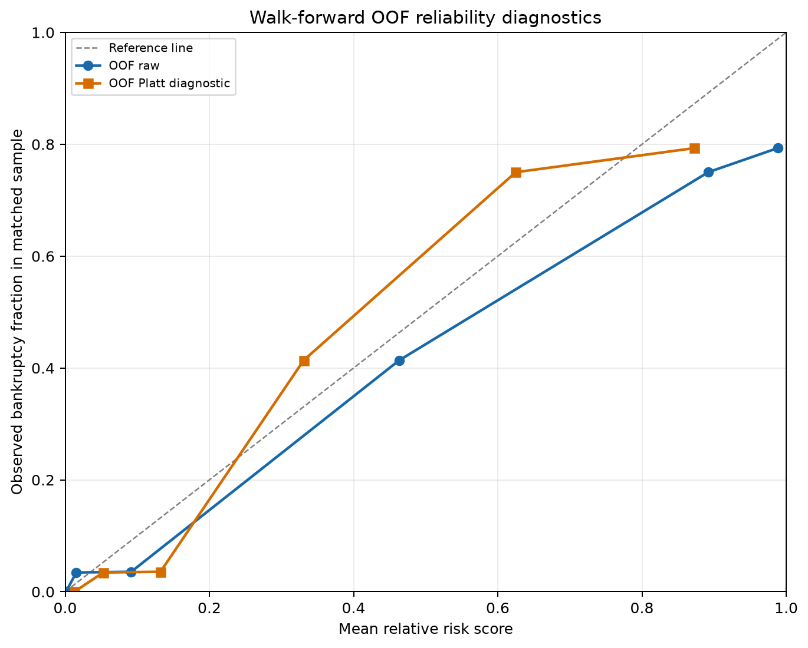
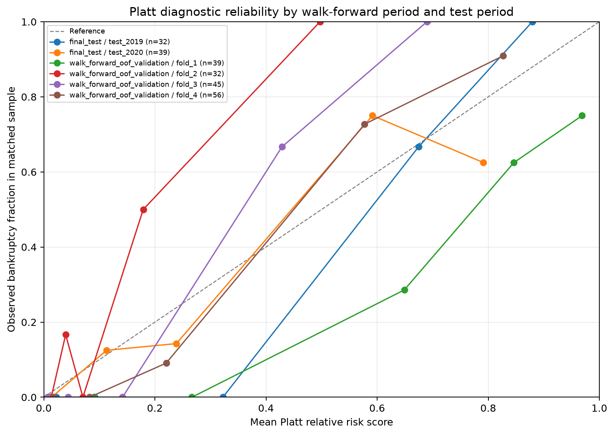
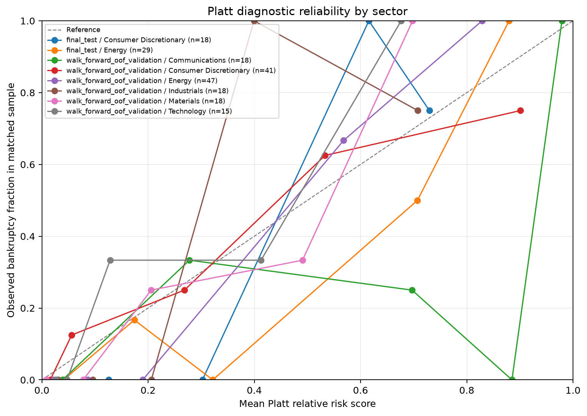

Interpretation: This matched sample has artificial bankruptcy prevalence. Model outputs and Platt-scaled outputs are relative bankruptcy risk scores, not real-world bankruptcy probabilities. Population probabilities require a representative population sample or valid external prevalence information.
Final-test calibration status: stable enough for descriptive diagnostics. Calibration is considered stable for descriptive reporting only when the group has at least 50 observations, 10 cases and 10 non-cases, finite slope/intercept, slope between 0.25 and 4, and absolute intercept no greater than 2. Even a stable result is a matched-cohort diagnostic, not population calibration. If calibration is unstable, emphasize ROC-AUC, PR-AUC, top-risk capture and precision rather than interpreting score values as probabilities.
Platt scaling was fitted on pooled walk-forward out-of-fold scores only; the final test rows were transformed after the fit was fixed. The stability status above evaluates the raw model score; calibration of both raw and Platt scores is shown in the tables. Brier score, log loss, calibration slope/intercept, and reliability curves describe this matched cohort. The calibration-by-time and calibration-by-sector tables include subgroup sample sizes and stability flags; small subgroups should not be read as precise estimates.
| events | bankrupt_events | roc_auc | pr_auc_average_precision | capture_top_1pct | capture_top_5pct | capture_top_10pct | precision_top_1pct | precision_top_5pct | precision_top_10pct |
|---|---|---|---|---|---|---|---|---|---|
| 76 | 25 | 0.9365 | 0.8496 | 0.0400 | 0.1200 | 0.2800 | 1.0000 | 0.7500 | 0.8750 |
| evaluation_split | group_type | group | score | events | bankrupt_events | matched_sample_prevalence | brier_score | log_loss | roc_auc | pr_auc_average_precision | calibration_intercept | calibration_slope | calibration_stable | calibration_interpretation | capture_top_1pct | precision_top_1pct | capture_top_5pct | precision_top_5pct | capture_top_10pct | precision_top_10pct |
|---|---|---|---|---|---|---|---|---|---|---|---|---|---|---|---|---|---|---|---|---|
| walk_forward_oof_validation | overall | walk_forward_oof_validation | raw_relative_risk_score | 172 | 58 | 0.3372 | 0.1195 | 0.4736 | 0.9053 | 0.7798 | -0.6492 | 0.5262 | True | matched-cohort diagnostic only | 0.0345 | 1.0000 | 0.1207 | 0.7778 | 0.2414 | 0.7778 |
| walk_forward_oof_validation | overall | walk_forward_oof_validation | platt_relative_risk_score | 172 | 58 | 0.3372 | 0.1181 | 0.3751 | 0.9053 | 0.7798 | 0.0023 | 1.0065 | True | matched-cohort diagnostic only | 0.0345 | 1.0000 | 0.1207 | 0.7778 | 0.2414 | 0.7778 |
| final_test | overall | final_test | raw_relative_risk_score | 76 | 25 | 0.3289 | 0.1135 | 0.4064 | 0.9365 | 0.8496 | -1.2985 | 0.7663 | True | matched-cohort diagnostic only | 0.0400 | 1.0000 | 0.1200 | 0.7500 | 0.2800 | 0.8750 |
| final_test | overall | final_test | platt_relative_risk_score | 76 | 25 | 0.3289 | 0.0950 | 0.3173 | 0.9365 | 0.8496 | -0.3498 | 1.4657 | True | matched-cohort diagnostic only | 0.0400 | 1.0000 | 0.1200 | 0.7500 | 0.2800 | 0.8750 |

| evaluation_split | group_type | group | score | events | bankrupt_events | matched_sample_prevalence | brier_score | log_loss | roc_auc | pr_auc_average_precision | calibration_intercept | calibration_slope | calibration_stable | calibration_interpretation | capture_top_1pct | precision_top_1pct | capture_top_5pct | precision_top_5pct | capture_top_10pct | precision_top_10pct |
|---|---|---|---|---|---|---|---|---|---|---|---|---|---|---|---|---|---|---|---|---|
| final_test | time_period | test_2019 | raw_relative_risk_score | 32 | 11 | 0.3438 | 0.0877 | 0.2694 | 0.9957 | 0.9924 | -18.6101 | 6.9049 | False | matched-cohort diagnostic only | 0.0909 | 1.0000 | 0.1818 | 1.0000 | 0.3636 | 1.0000 |
| final_test | time_period | test_2019 | platt_relative_risk_score | 32 | 11 | 0.3438 | 0.0587 | 0.2240 | 0.9957 | 0.9924 | -10.0619 | 13.2073 | False | matched-cohort diagnostic only | 0.0909 | 1.0000 | 0.1818 | 1.0000 | 0.3636 | 1.0000 |
| final_test | time_period | test_2020 | raw_relative_risk_score | 39 | 13 | 0.3333 | 0.1454 | 0.5568 | 0.8698 | 0.6762 | -0.7870 | 0.5201 | False | matched-cohort diagnostic only | 0.0000 | 0.0000 | 0.0769 | 0.5000 | 0.2308 | 0.7500 |
| final_test | time_period | test_2020 | platt_relative_risk_score | 39 | 13 | 0.3333 | 0.1335 | 0.4164 | 0.8698 | 0.6762 | -0.1431 | 0.9949 | False | matched-cohort diagnostic only | 0.0000 | 0.0000 | 0.0769 | 0.5000 | 0.2308 | 0.7500 |
| final_test | time_period | test_2021 | raw_relative_risk_score | 5 | 1 | 0.2000 | 0.0299 | 0.1096 | 1.0000 | 1.0000 | -16.1144 | 10.0644 | False | matched-cohort diagnostic only | 1.0000 | 1.0000 | 1.0000 | 1.0000 | 1.0000 | 1.0000 |
| final_test | time_period | test_2021 | platt_relative_risk_score | 5 | 1 | 0.2000 | 0.0276 | 0.1418 | 1.0000 | 1.0000 | -3.6547 | 19.2506 | False | matched-cohort diagnostic only | 1.0000 | 1.0000 | 1.0000 | 1.0000 | 1.0000 | 1.0000 |
| walk_forward_oof_validation | time_period | fold_1 | raw_relative_risk_score | 39 | 13 | 0.3333 | 0.2582 | 1.1602 | 0.8964 | 0.8216 | -2.4703 | 0.5278 | False | matched-cohort diagnostic only | 0.0769 | 1.0000 | 0.1538 | 1.0000 | 0.3077 | 1.0000 |
| walk_forward_oof_validation | time_period | fold_1 | platt_relative_risk_score | 39 | 13 | 0.3333 | 0.1851 | 0.5816 | 0.8964 | 0.8216 | -1.8168 | 1.0095 | False | matched-cohort diagnostic only | 0.0769 | 1.0000 | 0.1538 | 1.0000 | 0.3077 | 1.0000 |
| walk_forward_oof_validation | time_period | fold_2 | raw_relative_risk_score | 32 | 11 | 0.3438 | 0.1091 | 0.3884 | 0.9481 | 0.9463 | 2.2820 | 1.1466 | False | matched-cohort diagnostic only | 0.0909 | 1.0000 | 0.1818 | 1.0000 | 0.3636 | 1.0000 |
| walk_forward_oof_validation | time_period | fold_2 | platt_relative_risk_score | 32 | 11 | 0.3438 | 0.1484 | 0.4440 | 0.9481 | 0.9463 | 3.7015 | 2.1931 | False | matched-cohort diagnostic only | 0.0909 | 1.0000 | 0.1818 | 1.0000 | 0.3636 | 1.0000 |
| walk_forward_oof_validation | time_period | fold_3 | raw_relative_risk_score | 45 | 15 | 0.3333 | 0.0457 | 0.1598 | 0.9822 | 0.9654 | -0.3467 | 1.7985 | False | matched-cohort diagnostic only | 0.0667 | 1.0000 | 0.2000 | 1.0000 | 0.3333 | 1.0000 |
| walk_forward_oof_validation | time_period | fold_3 | platt_relative_risk_score | 45 | 15 | 0.3333 | 0.0784 | 0.2607 | 0.9822 | 0.9654 | 1.8799 | 3.4401 | False | matched-cohort diagnostic only | 0.0667 | 1.0000 | 0.2000 | 1.0000 | 0.3333 | 1.0000 |
| walk_forward_oof_validation | time_period | fold_4 | raw_relative_risk_score | 56 | 19 | 0.3393 | 0.0882 | 0.2962 | 0.9559 | 0.9144 | -0.9769 | 0.8895 | True | matched-cohort diagnostic only | 0.0526 | 1.0000 | 0.1579 | 1.0000 | 0.3158 | 1.0000 |
| walk_forward_oof_validation | time_period | fold_4 | platt_relative_risk_score | 56 | 19 | 0.3393 | 0.0862 | 0.2837 | 0.9559 | 0.9144 | 0.1243 | 1.7014 | True | matched-cohort diagnostic only | 0.0526 | 1.0000 | 0.1579 | 1.0000 | 0.3158 | 1.0000 |

| evaluation_split | group_type | group | score | events | bankrupt_events | matched_sample_prevalence | brier_score | log_loss | roc_auc | pr_auc_average_precision | calibration_intercept | calibration_slope | calibration_stable | calibration_interpretation | capture_top_1pct | precision_top_1pct | capture_top_5pct | precision_top_5pct | capture_top_10pct | precision_top_10pct |
|---|---|---|---|---|---|---|---|---|---|---|---|---|---|---|---|---|---|---|---|---|
| final_test | sector | Consumer Discretionary | raw_relative_risk_score | 18 | 6 | 0.3333 | 0.0983 | 0.3330 | 0.9444 | 0.8734 | -2.4207 | 1.5078 | False | matched-cohort diagnostic only | 0.1667 | 1.0000 | 0.1667 | 1.0000 | 0.3333 | 1.0000 |
| final_test | sector | Consumer Discretionary | platt_relative_risk_score | 18 | 6 | 0.3333 | 0.0890 | 0.3096 | 0.9444 | 0.8734 | -0.5539 | 2.8841 | False | matched-cohort diagnostic only | 0.1667 | 1.0000 | 0.1667 | 1.0000 | 0.3333 | 1.0000 |
| final_test | sector | Consumer Staples | raw_relative_risk_score | 6 | 2 | 0.3333 | 0.1682 | 1.0007 | 0.7500 | 0.5833 | -1.1616 | 0.3527 | False | matched-cohort diagnostic only | 0.0000 | 0.0000 | 0.0000 | 0.0000 | 0.0000 | 0.0000 |
| final_test | sector | Consumer Staples | platt_relative_risk_score | 6 | 2 | 0.3333 | 0.1597 | 0.5312 | 0.7500 | 0.5833 | -0.7250 | 0.6745 | False | matched-cohort diagnostic only | 0.0000 | 0.0000 | 0.0000 | 0.0000 | 0.0000 | 0.0000 |
| final_test | sector | Energy | raw_relative_risk_score | 29 | 10 | 0.3448 | 0.1536 | 0.5035 | 0.9158 | 0.9037 | -1.7267 | 0.7484 | False | matched-cohort diagnostic only | 0.1000 | 1.0000 | 0.2000 | 1.0000 | 0.3000 | 1.0000 |
| final_test | sector | Energy | platt_relative_risk_score | 29 | 10 | 0.3448 | 0.1068 | 0.3500 | 0.9158 | 0.9037 | -0.8001 | 1.4315 | False | matched-cohort diagnostic only | 0.1000 | 1.0000 | 0.2000 | 1.0000 | 0.3000 | 1.0000 |
| final_test | sector | Health Care | raw_relative_risk_score | 11 | 3 | 0.2727 | 0.0187 | 0.0717 | 1.0000 | 1.0000 | 18.1475 | 13.6504 | False | matched-cohort diagnostic only | 0.3333 | 1.0000 | 0.3333 | 1.0000 | 0.6667 | 1.0000 |
| final_test | sector | Health Care | platt_relative_risk_score | 11 | 3 | 0.2727 | 0.0529 | 0.1787 | 1.0000 | 1.0000 | ? | ? | False | matched-cohort diagnostic only | 0.3333 | 1.0000 | 0.3333 | 1.0000 | 0.6667 | 1.0000 |
| final_test | sector | Industrials | raw_relative_risk_score | 3 | 1 | 0.3333 | 0.0435 | 0.1568 | 1.0000 | 1.0000 | -14.8210 | 9.4393 | False | matched-cohort diagnostic only | 1.0000 | 1.0000 | 1.0000 | 1.0000 | 1.0000 | 1.0000 |
| final_test | sector | Industrials | platt_relative_risk_score | 3 | 1 | 0.3333 | 0.0411 | 0.1894 | 1.0000 | 1.0000 | -3.1351 | 18.0550 | False | matched-cohort diagnostic only | 1.0000 | 1.0000 | 1.0000 | 1.0000 | 1.0000 | 1.0000 |
| final_test | sector | Materials | raw_relative_risk_score | 9 | 3 | 0.3333 | 0.1175 | 0.3364 | 0.9444 | 0.9167 | -1.2478 | 0.9891 | False | matched-cohort diagnostic only | 0.3333 | 1.0000 | 0.3333 | 1.0000 | 0.3333 | 1.0000 |
| final_test | sector | Materials | platt_relative_risk_score | 9 | 3 | 0.3333 | 0.0955 | 0.2969 | 0.9444 | 0.9167 | -0.0233 | 1.8918 | False | matched-cohort diagnostic only | 0.3333 | 1.0000 | 0.3333 | 1.0000 | 0.3333 | 1.0000 |
| walk_forward_oof_validation | sector | Communications | raw_relative_risk_score | 18 | 6 | 0.3333 | 0.3424 | 1.4474 | 0.8611 | 0.8478 | -2.1036 | 0.3851 | False | matched-cohort diagnostic only | 0.1667 | 1.0000 | 0.1667 | 1.0000 | 0.3333 | 1.0000 |
| walk_forward_oof_validation | sector | Communications | platt_relative_risk_score | 18 | 6 | 0.3333 | 0.2444 | 0.6931 | 0.8611 | 0.8478 | -1.6268 | 0.7367 | False | matched-cohort diagnostic only | 0.1667 | 1.0000 | 0.1667 | 1.0000 | 0.3333 | 1.0000 |
| walk_forward_oof_validation | sector | Consumer Discretionary | raw_relative_risk_score | 41 | 14 | 0.3415 | 0.1452 | 0.6689 | 0.8651 | 0.7322 | -0.6045 | 0.3576 | False | matched-cohort diagnostic only | 0.0714 | 1.0000 | 0.1429 | 0.6667 | 0.2143 | 0.6000 |
| walk_forward_oof_validation | sector | Consumer Discretionary | platt_relative_risk_score | 41 | 14 | 0.3415 | 0.1455 | 0.4697 | 0.8651 | 0.7322 | -0.1617 | 0.6840 | False | matched-cohort diagnostic only | 0.0714 | 1.0000 | 0.1429 | 0.6667 | 0.2143 | 0.6000 |
| walk_forward_oof_validation | sector | Consumer Staples | raw_relative_risk_score | 6 | 2 | 0.3333 | 0.0025 | 0.0417 | 1.0000 | 1.0000 | -0.0367 | 8.0368 | False | matched-cohort diagnostic only | 0.5000 | 1.0000 | 0.5000 | 1.0000 | 0.5000 | 1.0000 |
| walk_forward_oof_validation | sector | Consumer Staples | platt_relative_risk_score | 6 | 2 | 0.3333 | 0.0373 | 0.1703 | 1.0000 | 1.0000 | 9.9129 | 15.3724 | False | matched-cohort diagnostic only | 0.5000 | 1.0000 | 0.5000 | 1.0000 | 0.5000 | 1.0000 |
| walk_forward_oof_validation | sector | Energy | raw_relative_risk_score | 47 | 16 | 0.3404 | 0.0596 | 0.2174 | 0.9778 | 0.9566 | -1.2413 | 1.1109 | False | matched-cohort diagnostic only | 0.0625 | 1.0000 | 0.1875 | 1.0000 | 0.3125 | 1.0000 |
| walk_forward_oof_validation | sector | Energy | platt_relative_risk_score | 47 | 16 | 0.3404 | 0.0653 | 0.2390 | 0.9778 | 0.9566 | 0.1340 | 2.1249 | False | matched-cohort diagnostic only | 0.0625 | 1.0000 | 0.1875 | 1.0000 | 0.3125 | 1.0000 |
| walk_forward_oof_validation | sector | Health Care | raw_relative_risk_score | 6 | 2 | 0.3333 | 0.0999 | 0.2751 | 1.0000 | 1.0000 | ? | ? | False | matched-cohort diagnostic only | 0.5000 | 1.0000 | 0.5000 | 1.0000 | 0.5000 | 1.0000 |
| walk_forward_oof_validation | sector | Health Care | platt_relative_risk_score | 6 | 2 | 0.3333 | 0.1501 | 0.3974 | 1.0000 | 1.0000 | ? | ? | False | matched-cohort diagnostic only | 0.5000 | 1.0000 | 0.5000 | 1.0000 | 0.5000 | 1.0000 |
| walk_forward_oof_validation | sector | Industrials | raw_relative_risk_score | 18 | 6 | 0.3333 | 0.1002 | 0.3474 | 0.9306 | 0.8179 | -0.3135 | 0.8209 | False | matched-cohort diagnostic only | 0.1667 | 1.0000 | 0.1667 | 1.0000 | 0.1667 | 0.5000 |
| walk_forward_oof_validation | sector | Industrials | platt_relative_risk_score | 18 | 6 | 0.3333 | 0.1196 | 0.3656 | 0.9306 | 0.8179 | 0.7029 | 1.5703 | False | matched-cohort diagnostic only | 0.1667 | 1.0000 | 0.1667 | 1.0000 | 0.1667 | 0.5000 |
| walk_forward_oof_validation | sector | Materials | raw_relative_risk_score | 18 | 6 | 0.3333 | 0.0690 | 0.2124 | 0.9722 | 0.9583 | -2.0574 | 2.1237 | False | matched-cohort diagnostic only | 0.1667 | 1.0000 | 0.1667 | 1.0000 | 0.3333 | 1.0000 |
| walk_forward_oof_validation | sector | Materials | platt_relative_risk_score | 18 | 6 | 0.3333 | 0.0790 | 0.2713 | 0.9722 | 0.9583 | 0.5718 | 4.0621 | False | matched-cohort diagnostic only | 0.1667 | 1.0000 | 0.1667 | 1.0000 | 0.3333 | 1.0000 |
| walk_forward_oof_validation | sector | Technology | raw_relative_risk_score | 15 | 5 | 0.3333 | 0.1003 | 0.3041 | 0.9400 | 0.9250 | 0.0531 | 0.8158 | False | matched-cohort diagnostic only | 0.2000 | 1.0000 | 0.2000 | 1.0000 | 0.4000 | 1.0000 |
| walk_forward_oof_validation | sector | Technology | platt_relative_risk_score | 15 | 5 | 0.3333 | 0.1082 | 0.3445 | 0.9400 | 0.9250 | 1.0630 | 1.5604 | False | matched-cohort diagnostic only | 0.2000 | 1.0000 | 0.2000 | 1.0000 | 0.4000 | 1.0000 |
| walk_forward_oof_validation | sector | Utilities | raw_relative_risk_score | 3 | 1 | 0.3333 | 0.1590 | 0.4077 | 1.0000 | 1.0000 | ? | ? | False | matched-cohort diagnostic only | 1.0000 | 1.0000 | 1.0000 | 1.0000 | 1.0000 | 1.0000 |
| walk_forward_oof_validation | sector | Utilities | platt_relative_risk_score | 3 | 1 | 0.3333 | 0.1878 | 0.5018 | 1.0000 | 1.0000 | ? | ? | False | matched-cohort diagnostic only | 1.0000 | 1.0000 | 1.0000 | 1.0000 | 1.0000 | 1.0000 |

| method | regularization_C | intercept | slope | fit_rows | fit_bankruptcies | fit_matched_sample_prevalence | interpretation |
|---|---|---|---|---|---|---|---|
| Platt scaling diagnostic on walk-forward OOF scores | 1.0000 | -0.6472 | 0.5228 | 172 | 58 | 0.3372 | relative risk score; not a population probability |
Subgroup capture-rate and precision columns are retained in the metrics CSV. See probability_calibration_metrics.csv for complete machine-readable results.